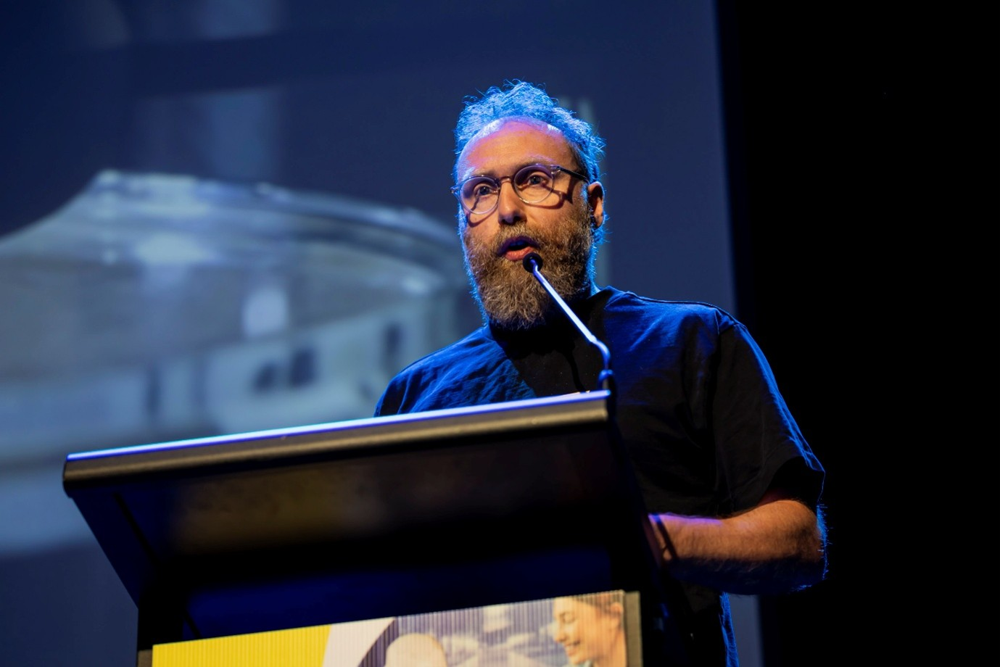

Keynote Speakers
Keynote 1: TBA
Professor Jennifer Chan
University of Sydney
Keynote 2: From Intelligence to Artificial Intelligence and Towards Superintelligence: The Role of Agentic Service-Oriented Computing
Professor Amin Beheshti
Abstract:
This keynote explores the progression from human intelligence to generative and agentic AI, and examines the prospect of superintelligence through the lens of Agentic Service-Oriented Computing (ASOC). It introduces ASOC as an approach to engineering agents as services, coordinating their capabilities around shared goals, and governing their interactions through principles of trust, security and accountability. Drawing on the ASOC manifesto and examples from Collective Learning AI’s Expert Village and Academy, the talk examines how specialised agents, shared knowledge graphs and personalised context can support collective learning and collaboration between people and AI. For the data science and machine learning community, it highlights the importance of data quality, knowledge grounding, provenance and evaluation in developing reliable agentic systems. The keynote concludes by considering how collective intelligence should be assessed, what evidence would demonstrate progress towards superintelligence, and how increasingly autonomous systems can remain subject to meaningful human oversight.
Ref:
- Beheshti et al., "Agentic Service-Oriented Computing: A Manifesto for the Next Frontier of Service-Oriented Computing", The International Conference on Web Services (IEEE ICWS), IEEE Services, Sydney, Australia, 2026.
- Beheshti A., "Natural Language-Oriented Programming (NLOP): Towards Democratizing Software Creation", IEEE International Conference on Software Services Engineering, IEEE Services, Shenzhen, China, 2024.
Short Biography:
Professor Amin Beheshti leads the School of Computing at Macquarie University in Sydney, where he is Professor of Data Science. He founded and directs the Centre for Applied Artificial Intelligence and is the Founder and CEO of Collective Learning AI. His research connects data science and knowledge representation with generative and agentic AI, with applications in intelligent processes, education and industry. His research portfolio spans more than 80 projects with aggregate funding exceeding $56 million. Through his academic and entrepreneurial work, he brings researchers and industry partners together to develop AI systems that address practical problems. Professor Beheshti has supervised over 60 research students to successful completion. His PhD graduates now hold senior AI roles in industry, including Staff Gen AI Scientist at Google, Technical Advisor at Microsoft, and Head of Responsible AI at Optus. Professor Beheshti received the AI Academic/Researcher of the Year award at the inaugural Australian National AI Awards in 2024. He completed his PhD and postdoctoral research at UNSW Sydney and has authored books on data, social and process analytics. His current work includes Agentic Service-Oriented Computing and collective learning, with a focus on making AI useful, trustworthy and accountable.
Keynote 3: When to Stop, What to Trace, How Granular to Plan: Toward Structured LLM Agents
Professor Lina Yao
Abstract:
LLM agents often struggle less because of missing knowledge than because of structural mismatches: reasoning that isn’t sure when to stop, memory that’s hard to trace, and plans at the wrong level of granularity. In this talk, I will share a line of our recent work that aims to learn the right abstraction at each stage of the agent loop, including deliberation and stopping for reasoning, hybrid and selective memory, and causal abstraction for grounded planning, and to suggest that trustworthiness may depend in part on getting that structure right.
Short Biography:
Lina Yao is a Professor at UNSW Sydney, an ARC Future Fellow, and a Visiting Scientist at CSIRO. Her research focuses on machine learning, recommender systems, causal representation learning, and LLM agents.
Keynote 4 (Industry): AI at the Edge: Opportunity, Deception and the Road to Superintelligence
Matthew Mccarthy
Abstract:
This session explores how AI is simultaneously becoming one of humanity's most powerful tools and one of its most disruptive challenges. Covering topics ranging from deepfakes, synthetic evidence and AI-enabled crime through to autonomous systems, offensive AI research and the path toward AGI and ASI, the presentation provides a balanced view of both the risks and extraordinary opportunities ahead.
Short Biography:
Matt McCarthy is an Inspector with the NSW Police Force and currently leads the Data Science and Geospatial teams within the State Intelligence Command. During a policing career spanning more than three decades, he has served at Special Branch, Internal Affairs, the Fraud & Cybercrime Squad, and the NSW Olympic Police Security Command. Matt has played intelligence leadership roles in major events including APEC 2007, World Youth Day 2008 and the Lindt Café Siege. He was also responsible for introducing the first artificial intelligence capabilities into the NSW Police Force. Outside work, Matt is an enthusiastic traveller who has visited more than 20 countries, including North Korea which caused him visa issues with the Americans.
Keynote 5: AI in the Cultural and Creative Sector: What’s at stake and how can we form future-focused value-driven interdisciplinary collaborations?

Professor Oliver Bown
Abstract:
It’s common to imagine that a prosperous society, that many believe AI can deliver, would be one where people have more liberty to engage in creative and cultural pursuits, that in their own right are not economically productive, but rather underpin individual and social growth of a different form. But present AI, led by big corporations, seems more of a threat to this flourishing. Training data consent has been a primary policy issue, but even if we imagine that was to solved, we see a cascade of further threats down the line centred on the capacity to automate cultural production. In this talk I discuss what is at stake and urge delegates to seek to ground their research in future-focused value-driven interdisciplinary collaborations.
Short Biography:
Oliver (Ollie) Bown is a British researcher and musician based in Australia, where he is professor at the School of Art & Design at the University of New South Wales, Sydney, He is co-director of UNSW’s Creative Technologies Research Lab (CTRL), an interdisciplinary academic group comprising creative artists and musicians, designers, media theorists and cultural studies researchers who together research technology in its relation to creative work. Ollie’s research explores the nature of creativity in the arts, how technology is a site of artistic creative exploration, and how AI technologies are transforming creative fields in their ability to automate aspects of the creative process.
He has written over 100 academic articles in technology, arts and social science fields. His first book, Beyond the Creative Species: Making Machines that Make Art and Music, was published by MIT Press in 2021 immediately before the current boom in generative AI. Since 2022 he has been a researcher on the project Music & AI: Critical Interdisciplinary Studies funded by the European Research Council and bringing together international leaders in the social study of music and AI. He is currently also co-investigator on two Australian Research Council Discovery Projects: one on sound in public space; and the other on artists, AI and fairness. He is a regular commentator about the impacts of AI on the creative arts, and has contributed to debates at the World Intellectual Property Organisation, OECD, the Australian National AI Centre, Creative Australia and SXSW.
He is also an electronic musician best known for his work in the UK duo Icarus, since 1997, and Australian ensemble Tangents, since 2010.
Keynote 6: Negotiating Ethics and AI
Associate Professor Simon Knight
Abstract:
Discussions of ethical artificial intelligence is often framed in terms of guiding principles for the implementation of AI. Participatory approaches, involving stakeholders in decisions about the use and regulation of AI, are sometimes proposed as mechanisms through which to address concerns regarding AI. However, these approaches can assume the desirability or inevitability of AI adoption, reducing participation to questions of implementation, rather than whether, where, and for what purposes AI should be used. As a result, opportunity for broader participation regarding the societal goals that AI can and cannot help us achieve may be overlooked. In this talk I discuss alternative framings of ethical AI and their implications for practice.
Short Biography:
Dr Simon Knight is an Associate Professor in the University of Technology Sydney (UTS) Transdisciplinary School, and Australian Research Council, Discovery Eary Career Award (DECRA) Fellow. He is a previous co-editor-in-chief of the Journal of Learning Analytics, and inaugural past Director of the UTS Centre for Research on Education in a Digital Society (UTS:CREDS). Dr Knight researches how people learn to navigate uncertainty, disagreement, and evidence, and the mediating role of technology in that. His work has developed design approaches for learning analytics, exploring the use of data as a form of evidence, and design for learning towards epistemic and ethical reasoning.